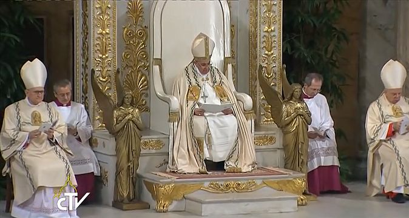
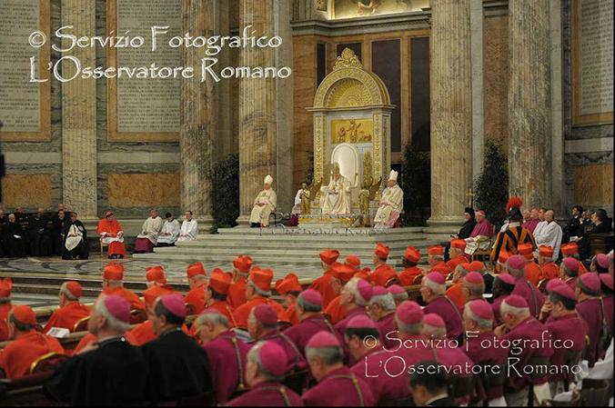
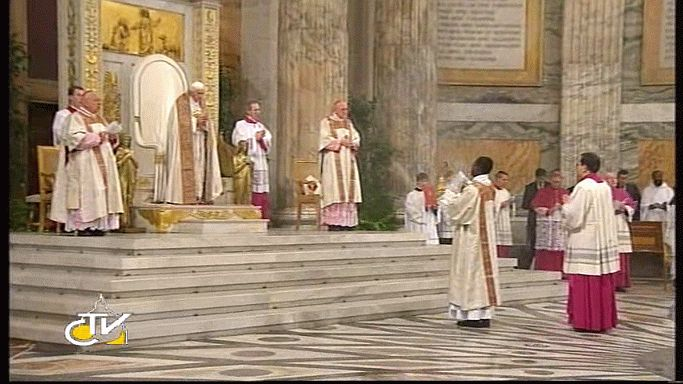

Pope Enthroned Between Cherubim,
Showing himself that he is God.
I ask you, who but the Antichrist would dare to commit the ultimate act of blasphemy by enthroning himself between two golden Cherubim, dressed in white linen — as if he were God Almighty majestically cloaked in awesome fiery righteousness, the gleaming white robe of light of His Shekinah Glory, on the mercy seat of the Ark of the Covenant in the most holy place of the Temple, or on a Great White Throne of power and authority for judgment?
Isa 37:16 O LORD of hosts, God of Israel, that dwellest between the cherubims, thou art the God, even thou alone, of all the kingdoms of the earth: thou hast made heaven and earth.
Psalms 104:1-3 (KJV)
1 Bless the Lord, O my soul. O Lord my God, thou
art very great; thou art clothed with honour and majesty.
2 Who coverest
thyself with light as with a garment: who stretchest out the heavens like a
curtain:
Mark 9:2-3 (KJV)
2 And after six days Jesus taketh with him
Peter, and James, and John, and leadeth them up into an high mountain apart by
themselves: and he was transfigured before them.
3 And his raiment
became shining, exceeding white as snow; so as no fuller on earth can white
them.
Rev 4:6 (NIV) In the center, around the throne, were four living creatures, ...
Rev 20:11 (KJV) And I saw a great white throne, and him that sat on it, from whose face the earth and the heaven fled away; and there was found no place for them.
2 Thess 2:4
(KJV)
3 Let no man deceive you by any means:
for that day shall not come, except there come a falling away first, and
that man of sin be revealed, the son of perdition;
4 Who
opposeth and exalteth himself above all that is called God, or that is
worshipped; so that he as God sitteth in the temple of God, shewing
himself that he is God.
5 Remember ye not, that, when I was yet
with you, I told you these things?
Pope Francis leads the celebration of the Vespers of the Solemnity of the Conversion of Saint Paul, Jan. 25, 2014, concluding the Week of Prayer for Christian Unity, at the Basilica of St. Paul's Outside the Walls (San Paolo fuori le mura). Note that Pope Francis was seated on a great white throne between two golden Cherubim (Isa 37:16), and four living creatures (Rev 4:6-8), in the apse.

Screen capture from Vatican TV (CTV)
On April 14, 2013, Pope Francis celebrated Mass for the first time at the Basilica of St. Paul's Outsides the Walls.
Screen captures from Vatican TV (CTV)

Screen captures from Vatican TV (CTV)
Below are several occasions on which Pope Benedict XVI did the same.

ROME,
June
28, 2009 – In the apse of the basilica of Saint
Paul's Outside the Walls.
Benedict XVI enthroned
during the vespers service for St. Peter and St. Paul.
Screen capture from Vatican TV (CTV)

Screen capture from Vatican TV (CTV)
Below is an overview of the throne from 2008.
Video of Pope's Homily for start
of the Pauline year.

Screen capture from Vatican TV (CTV)
Video of Benedict closing the week of Christian Unity, Jan. 25, 2011.

Screen capture from Vatican TV (CTV)
Vatican
Video / Photo archive - 2011.
Get VLC Player for
.mov video. (Record button with enhanced controls)

Screen capture from Vatican TV (CTV)
Virtual Tour of St. Paul Outside-the-Walls
Video
of Benedict closing the week of Christian Unity, Jan. 25, 2012.

Photo 256
Benedict XVI
again closed the Week of Prayer for Christian Unity,
which coincided
with the feast celebrating the conversion of St. Paul, on January 25th, 2013,
enthroning himself between Cherubim at
Saint
Paul's Outside the Walls, as shown below:

Screen capture from Vatican TV (CTV)
2 Thess 2:3-8 (KJV)3 Let no man deceive you by any means: for that day [the second coming] shall not come, except there come a falling away [apostasy] first, and that man of sin [lawlessness] be revealed, the son of perdition [destruction];The phrase "son of perdition" is used only twice in scripture, here by Paul, and also in John 17:12, where Jesus is referring to Judas Iscariot, a type or pattern of the antichrist. Like Judas, the antichrist is a deceiver, a wolf in sheep's clothing who outwardly professes to be a loyal, faithful and obedient servant of God, even as he subtly and masterfully deceives most Christians into rebellion against God and His law:
4 Who opposeth and exalteth himself above all that is called God, or that is worshipped; so that he as God sitteth in the temple of God, shewing himself that he is God.While the Bible teaches that the remnant church will call the faithful saints out of apostate Babylon by proclaiming the three angels' messages (Rev. 14:6-11), the papacy is attempting the exact opposite, to unite all Christians under the papacy in an ecumenical movement.5 Remember ye not, that, when I was yet with you, I told you these things?When Paul was in Thessalonica, he had spoken freely with them, but he could not be so candid in his letter.6 And now ye know what withholdeth that he [Antichrist] might be revealed in his time.Paul had told them exactly who the restrainer of the Antichrist was, and when this restrainer was removed, the "time" period in which the Antichrist would flourish and thereby reveal himself.
7 For the mystery of iniquity [Antichrist] doth already work: only he who now letteth [restrains] will let [restrain], until he be taken out of the way.
8 And then shall that Wicked be revealed, ...
8 ... whom the Lord shall consume with the spirit of his mouth, and shall destroy with the brightness of his coming:Note that in verse 7, Paul says the Antichrist is already present, but inhibited, awaiting the opportunity to work freely. This same Antichrist would be present at the second coming, destroyed by the Lord's glory. Clearly Antichrist was not a single individual, it was a dynasty of men that would span the 1260 years of supremacy, and beyond, to the second coming.